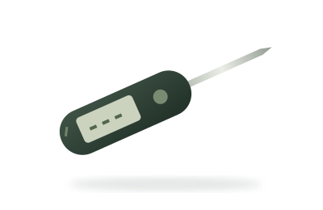

CHEFMAN
Chefman 6 Qt Dual-Window
A format to compare when you want separate baskets and a finish-together setting.
Combined capacity6 Qt / 5.67 L
Explore the details
View listing Amazon · paid link
The countertop edit · Autumn / Winter 2026
A bigger basket or a smaller oven? A quick temperature check or wireless monitoring? Find the kitchen gear that fits the way you actually cook.
Start with your kitchenNot a list of must-have gadgets.
Understand the trade-offsFormat, space and everyday care.
Choose on your termsThe details, without the hype.
The considered shortlist
Three air-fryer formats and two ways to check the cook. Compare the details that matter to you.
CHEFMAN
A format to compare when you want separate baskets and a finish-together setting.
 Format illustration · not to scale
Format illustration · not to scale
EMERIL LAGASSE
French doors and an oven-style interior. Start with the footprint before comparing cooking modes.
CHEFMAN
The single-basket option in this edit. Compare the shape of your usual batch with the published capacity.

Format illustration · not to scaleTHERMOMAVEN
Compare a digital probe’s readout, care instructions and response-time claims before adding app-connected features.
 Format illustration · not to scale
Format illustration · not to scale
CHEF iQ
The app-connected format in this edit. Verify the probe bundle and connectivity requirements for your setup.
This edit describes the observed destinations of the five submitted links, not owner-confirmed product intent. Account-level attribution checks are still open. Prices and availability are checked on Amazon; no price or star rating is reproduced here. Link & intent status · How we work.
Before you add to basket
Buying guides for the decisions a feature list doesn’t make for you.
The format question
Separate baskets, one larger drawer or French doors: compare the layouts before counting presets.
Read the guide 02Size without the guesswork
Combined quarts are only the starting point. Compare the basket layout and leave unmeasured serving estimates out of it.
Read the guide 03The everyday details
Measure where it will live, check the removable parts, and separate appliance dimensions from required clearance.
Read the guide 04Beyond the feature list
A practical set of questions about layout, modes, exact variants and the tools already in your kitchen.
Read the guideFind your starting point
You don’t need to compare everything at once. Start with the choice that would change your everyday cooking.
Keep the good questions coming
Follow new guides in your RSS reader. No inbox signup, no made-up trends. New topics stay proposals until there’s a useful question and evidence to answer it.